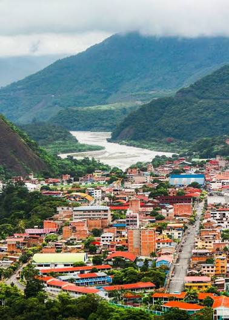

Quillabamba is located in the Cusco region of southeastern Peru. Known as the “City of Eternal Summer,” it is famous for its warm climate and beautiful natural surroundings.
it is famous for its warm tropical climate, beautiful landscapes, and lush vegetation. What makes it truly special is its rich production of high-quality coffee, cacao, and exotic fruits, as well as nearby natural wonders like the Siete Tinajas waterfalls.
